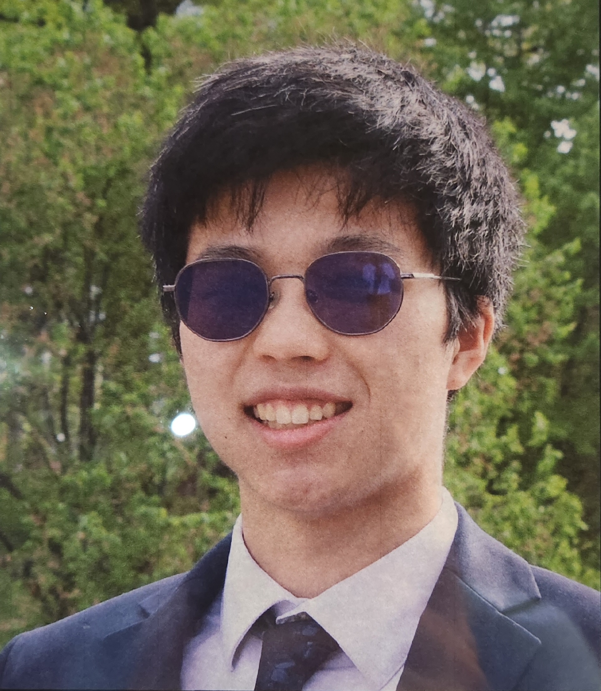

About
Hello, I am Kyle Wang, a Rose-Hulman Student studying Computer Science. I enjoy listening to music and playing the violin. I am currently a sophomore advisor in Blumberg.
I like being a sophomore advisor and interacting with all the freshmen. It's like being a mentor and giving fresh minds the push they need to have a full college experience. It is an amazing job and I encourage freshmen to consider being an SA next year.